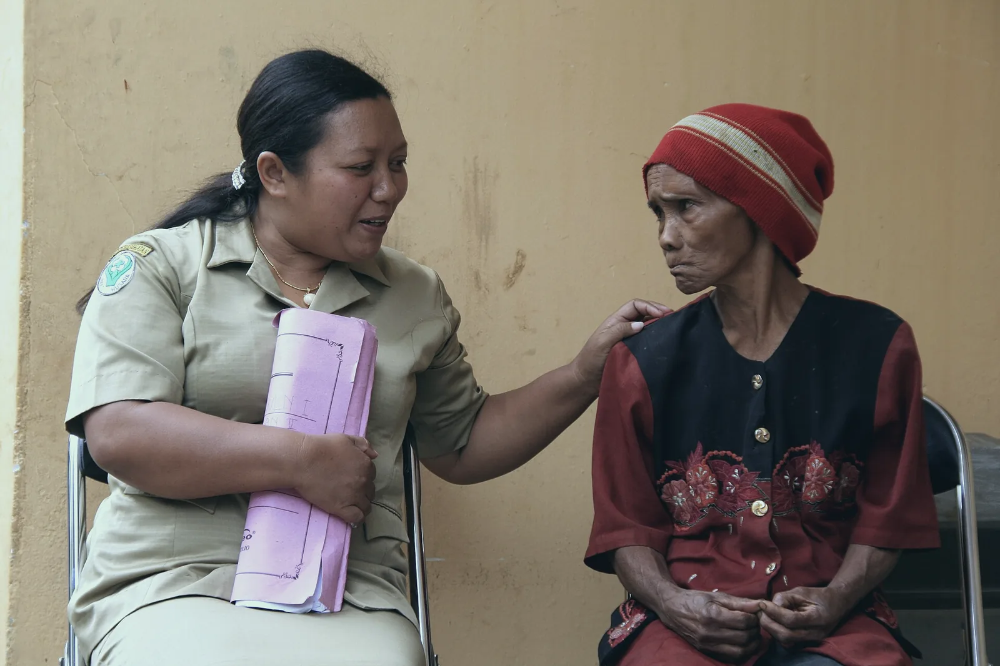
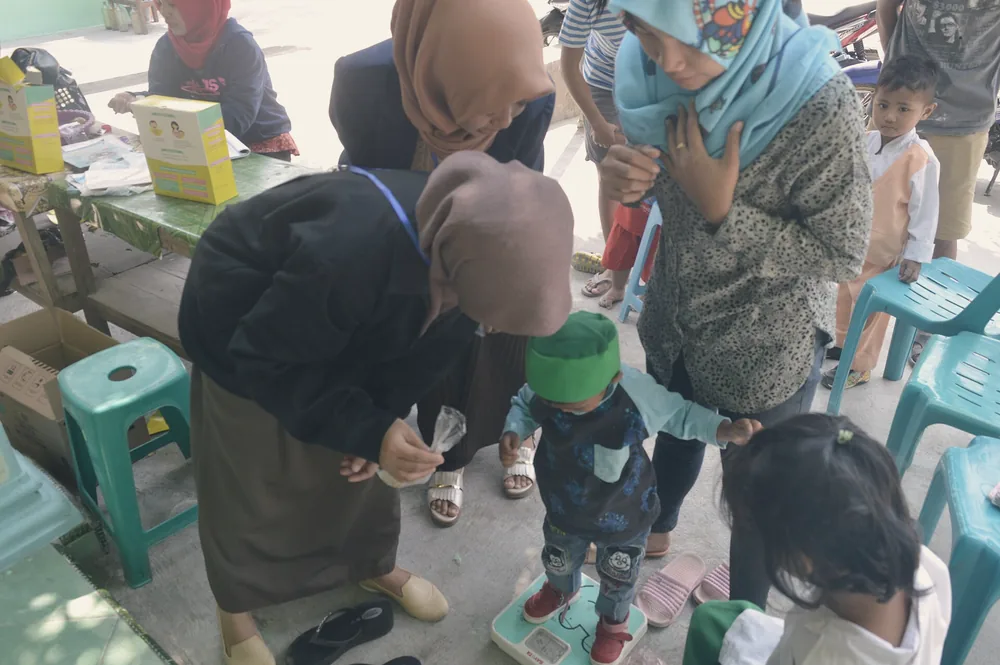
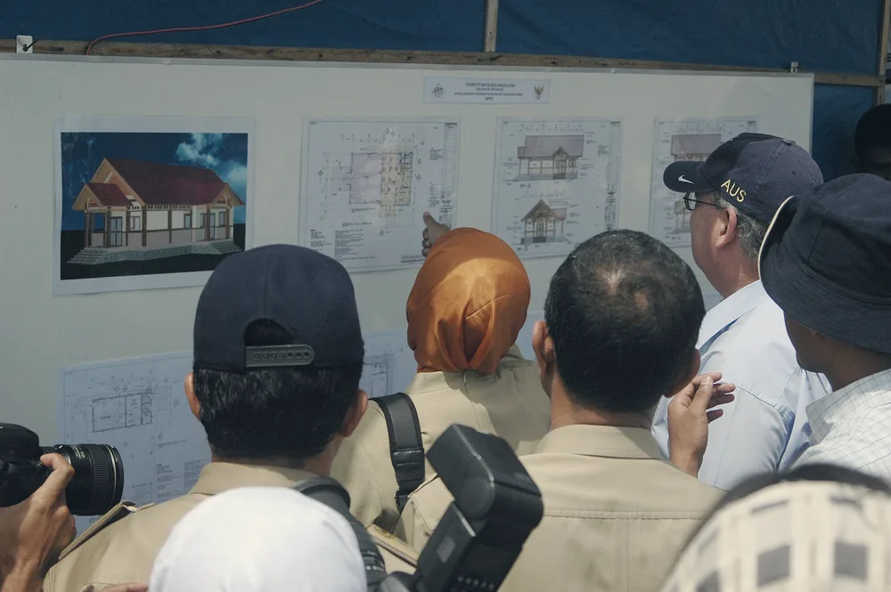
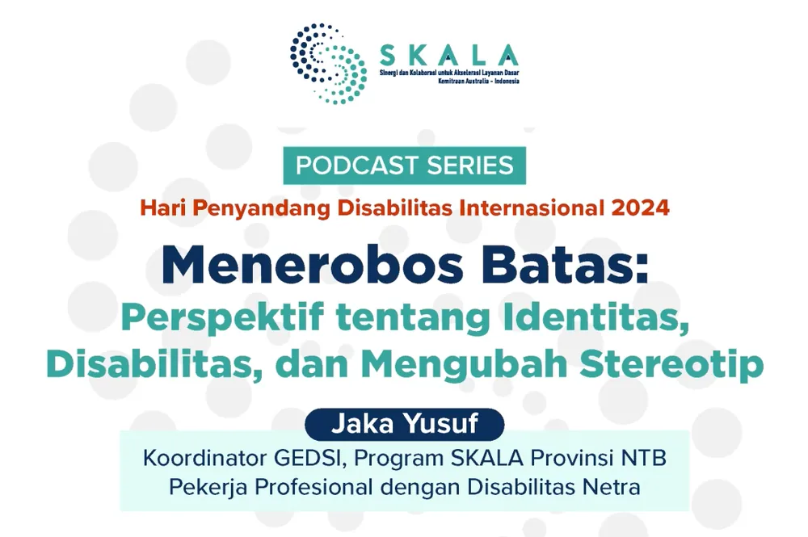
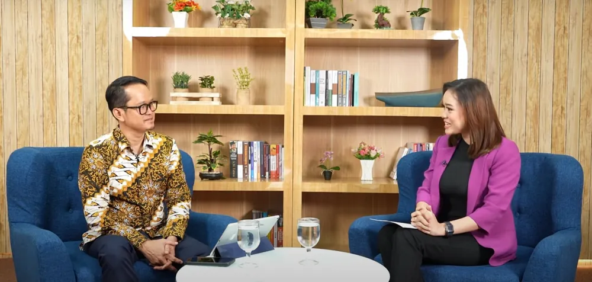
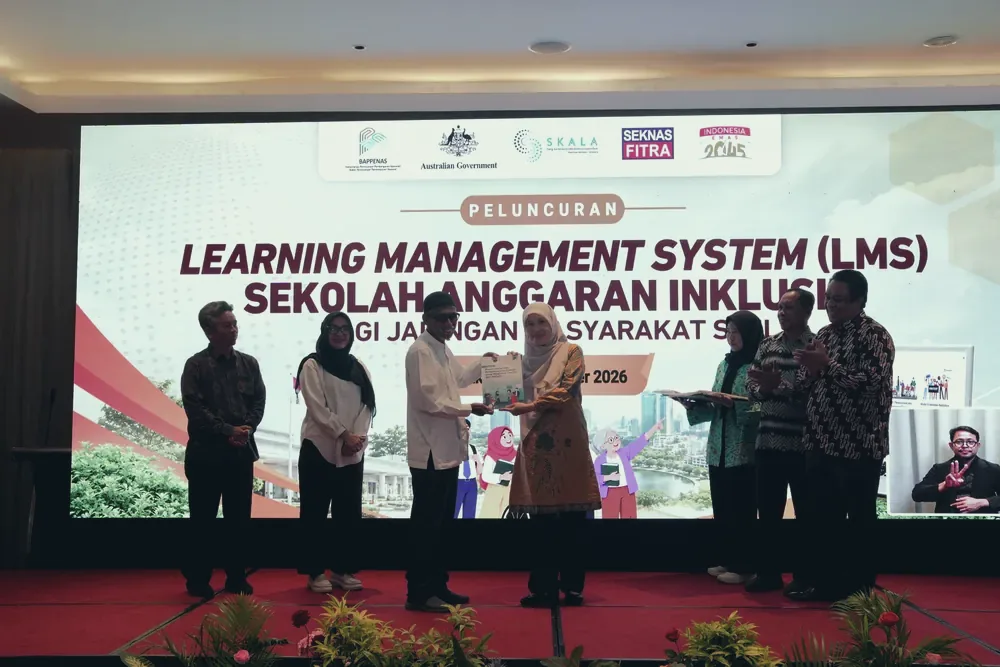

Capaian akhir 1
Pusat
Kondisi pemampu yang lebih kuat bagi penyediaan layanan dasar di daerah.
Lihat capaian antara: PusatSKALA adalah Program Kemitraan Australia–Indonesia yang bekerja bersama Kemendagri, Kemenkeu, dan Bappenas untuk mengurangi kemiskinan dan ketimpangan di daerah tertinggal.
Kami bekerja lewat perencanaan, penganggaran, dan data yang kuat.
Kami mendampingi pemerintah pusat dan 12 provinsi agar kebijakan menjadi layanan yang benar-benar dirasakan warga.

SKALA bermitra dengan Kemendagri, Kemenkeu, dan Bappenas agar layanan dasar sampai ke warga miskin dan rentan di daerah tertinggal.
Kondisi pemampu yang lebih kuat bagi penyediaan layanan dasar di daerah.
Lihat capaian antara: Pusat
Penyediaan layanan dasar di daerah yang lebih baik.
Lihat capaian antara: DaerahPartisipasi, representasi, dan pengaruh yang lebih kuat bagi perempuan, penyandang disabilitas, dan kelompok rentan.
Lihat capaian antara: Warga
Program unggulan
Data terkonsolidasi seperti SIKOMPAK dan SEPAKAT membantu pemerintah merencanakan layanan dasar yang tepat sasaran.
Lihat programMemperkuat kebijakan keuangan publik dan Standar Pelayanan Minimal di daerah.
Lihat program: Regulasi & StandarMembantu provinsi dan kabupaten merencanakan dan menganggarkan layanan dasar.
Lihat program: Perencanaan & AnggaranData terkonsolidasi seperti SIKOMPAK dan SEPAKAT untuk keputusan berbasis bukti.
Lihat program: Data & Sistem InformasiPerempuan, penyandang disabilitas, dan kelompok rentan ikut menentukan arah layanan.
Lihat program: Partisipasi & GEDSIPilih provinsi untuk melihat fokus program di wilayah tersebut.
Jelajahi wilayah kerja Seri Podcast Harian Kompas: Isu Lanjut Usia Hantui Indonesia? (skala.or.id, tab baru)
Seri Podcast Harian Kompas: Isu Lanjut Usia Hantui Indonesia? (skala.or.id, tab baru)
Menerobos Batas: Perspektif tentang Identitas, Disabilitas, dan Mengubah Stereotip (skala.or.id, tab baru)
Regsosek untuk Perencanaan Pembangunan Nasional yang Lebih Baik (skala.or.id, tab baru)
SEKAR Inklusif: Sistem Manajemen Pembelajaran untuk Memperkuat Partisipasi MasyarakatNasional